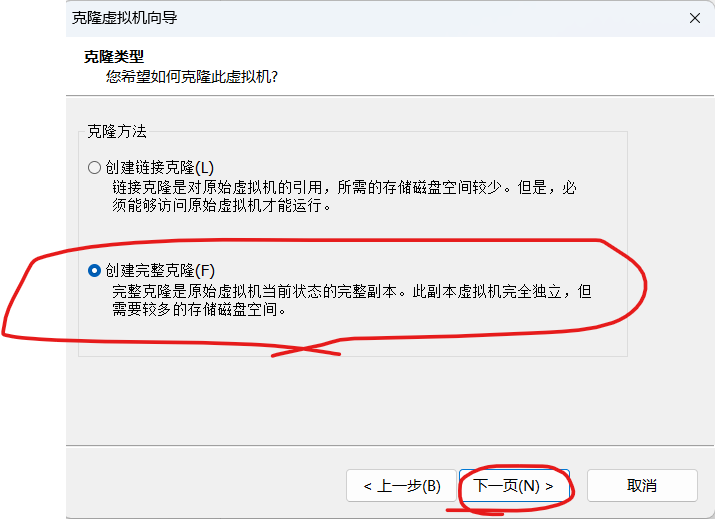

克隆主机
2025-09-26
将LG04关机在VMware中按以下步骤操作

点击下一步

点击下一步
选择创建完整克隆，点击下一步

输入名称，地址，点击完成

开启LG06 
更改主机名为LG06
vim /etc/sysconfig/network

删除NAME="eth0"旧网卡删除，将新网卡NAME="eth1"改为"eth0"，复制新的ipv6地址ATTR{address}="ipv6的值"
vim /etc/udev/rules.d/70-persistent-net.rules

修改网卡配置，更改复制的ipv6地址，改静态ipv4地址
vim /etc/sysconfig/network-scripts/ifcfg-eth0
重启LG06
reboot
ping www.baidu.com，发现能够ping通
ping www.baidu.com

查看LG04、LG05、LG06IP地址
ifconfig


使用xshell连接LG04、LG05、LG06